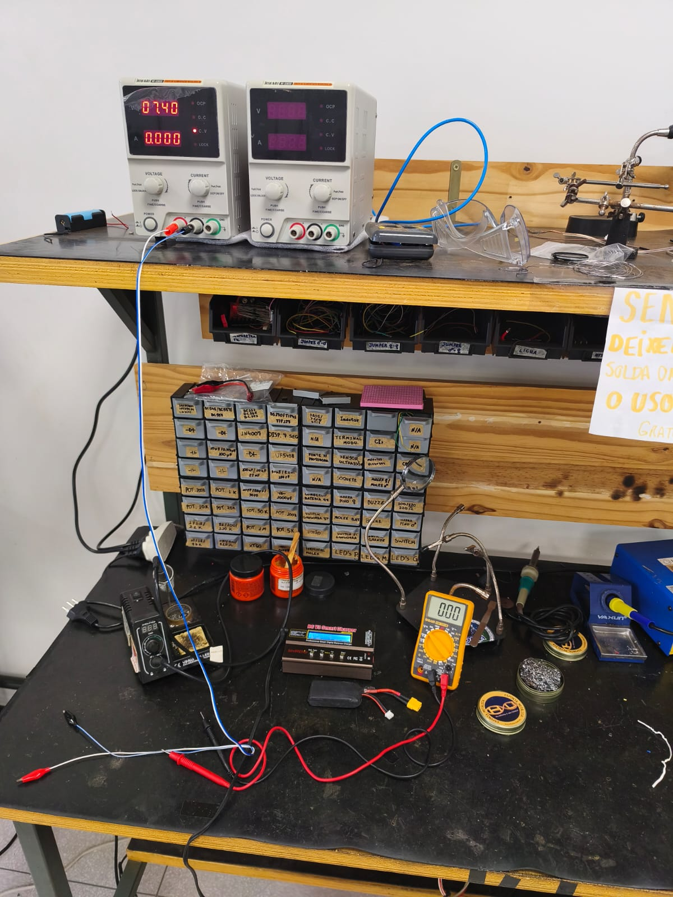

Ensaio de Bancada e Inspeção Inicial de Bateria (LiPo 2S)¶
1. Identificação da Atividade e Rastreabilidade¶
- Identificador da Issue:
#201 - Montar bancada de ensaio e inspeção de baterias - Subsistema: Energia e Alimentação
- Elemento EAP:
2.1 Alimentaçãoe2.2 Capacidade Energética - Requisitos Atendidos:
RNF-04(Autonomia de bateria para completar os labirintos consecutivamente) eRF-13(Calibração e prontidão do hardware) - Objetivo: Estabelecer o setup instrumental de bancada, realizar a recepção, inspeção visual-mecânica, medição das tensões em circuito aberto (\(V_{OC}\)) e processo de carga balanceada até a tensão de carga plena (\(8{,}40\text{ V}\)) da bateria LiPo 2S do Micromouse, utilizando o carregador balanceador digital iMAX B6 V3 e instrumentação de bancada.
2. Setup Instrumental de Bancada¶
Para assegurar o balanceamento preciso célula a célula e a total segurança contra sobrecarga ou estresse térmico, o setup instrumental de bancada foi estruturado com os seguintes equipamentos:
| Equipamento / Ferramenta | Modelo / Especificações | Função no Ensaio |
|---|---|---|
| Carregador / Balanceador Digital | iMAX B6 V3 (80W / 6A) Compatível com LiHV, LiPo, Li-ion, NiMH, Ni-Cd Adaptador de alimentação DC: 12V / 5A |
Carga balanceada inteligente das 2 células via conector de balanceamento JST-XH e linha de potência XT30 |
| Fonte Regulável DC | Yaxun 1502DD Faixa: 0–15 V contínuos, 0–2 A com corte de sobrecorrente (OCP) |
Alimentação auxiliar de bancada, testes de calibração e emulação de carga CC |
| Multímetro Digital | Digital True-RMS Calibrado Resolução de \(1\text{ mV}\) DC, precisão básica \(\pm 0{,}5\%\) |
Verificação metrológica independente das tensões de saída e validação cruzada do balanceamento |
| Carga Resistiva de Ensaio | Resistores Cerâmicos de Potência (\(10\,\Omega\) / \(4{,}7\,\Omega\), \(10\text{ W}\) a \(20\text{ W}\)) | Aplicação de carga resistiva de baixa intensidade para verificação de resposta em carga e estabilidade |
| Cabos e Conexões | Cabo com conector XT30 e chicote balanceador JST-XH 3 pinos | Conexão de baixa perda e alta confiabilidade com a bateria |
2.1 Diagrama em Blocos do Setup Experimental¶
graph LR
subgraph "Alimentação de Bancada"
Adaptador["Adaptador 12V / 5A"]
Fonte["Fonte Yaxun 1502DD<br>(Auxiliar / Calibração)"]
end
subgraph "Sistema de Carga e Monitoramento"
iMAX["Carregador Digital iMAX B6 V3<br>(Modo: LiPo Balance CHG 2S)"]
Multimetro["Multímetro Digital True-RMS<br>(Aferição Cruzada mV)"]
end
subgraph "Bateria sob Ensaio"
Pack["Bateria LiPo 2S<br>(Specs nominais desconhecidas)"]
XT30["Terminal Potência: XT30"]
JST["Terminal Balanceamento: JST-XH 3V"]
end
Adaptador -->|"Alimentação DC 12V"| iMAX
iMAX -->|"Linha de Carga Principal"| XT30
iMAX -->|"Monitoramento Célula a Célula"| JST
XT30 --- Pack
JST --- Pack
Multimetro -.->|"Verificação Independente"| JST
Multimetro -.->|"Verificação Independente"| XT303. Inspeção Visual e Características da Bateria¶
3.1 Identificação do Componente¶
- Química / Tecnologia: Polímero de Lítio (LiPo).
- Topologia: 2S (duas células ligadas em série).
- Tensão Nominal: \(7{,}40\text{ V}\) (\(3{,}70\text{ V}\) por célula).
- Tensão Máxima de Carga Plena: \(8{,}40\text{ V}\) (\(4{,}20\text{ V}\) por célula).
- Capacidade Nominal e Taxa de Descarga (C-Rating): Desconhecidas (bateria sem etiqueta externa de especificações ou folha de dados do fabricante).
3.2 Protocolo de Inspeção Física¶
Devido à ausência de dados nominais de fábrica, a inspeção visual e mecânica foi executada com atenção redobrada: 1. Invólucro (Pouch): Sem sinais de estufamento (puffing), sem perfurações, vincos profundos ou vazamentos de eletrólito. 2. Chicote de Potência: Fiação de silicone flexível com conector XT30 devidamente soldado e isolado com termorretrátil. 3. Chicote de Balanceamento: Conector JST-XH de 3 pinos sem oxidação, com polaridade conferida: * Pino 1 (GND): Referência negativa comum (\(0\text{ V}\)). * Pino 2 (Célula 1): Tomada intermediária (\(V_{C1}\)). * Pino 3 (Célula 2): Terminal positivo do conjunto (\(V_{pack} = V_{C1} + V_{C2}\)).
4. Metodologia de Carga Balanceada com iMAX B6 V3¶
Pelo fato de a capacidade nominal não ser conhecida formalmente, adotou-se uma abordagem conservadora de segurança operacional:
1. Seleção de Modo: Utilizou-se o programa LiPo BALANCE CHG (Carga Balanceada) no iMAX B6 V3, que garante que nenhuma célula exceda individualmente \(4{,}20\text{ V}\), equalizando o balanço de carga.
2. Corrente de Carga Restrita (\(I_{chg}\)): A corrente foi parametrizada em \(0{,}5\text{ A}\) (taxa segura que garante ficar abaixo de \(1\text{C}\) mesmo para baterias LiPo compactas de pequena capacidade).
3. Tensão de Corte Automática: \(8{,}40\text{ V}\) (\(4{,}20\text{ V}\) por célula).
4. Monitoramento Térmico e de Tempo: Ensaio realizado sob supervisão presencial contínua, com monitoramento da carcaça da bateria para garantir ausência de aquecimento.
5. Registro de Evidências Experimentais¶
5.1 Tabela de Medições Elétricas¶
| Parâmetro Mensurado | Tensão Inicial (\(V_{OC}\) em Repouso) | Tensão Final (Pós-Carga Balanceada) | Instrumento de Medição | Tolerância / Status |
|---|---|---|---|---|
| Célula 1 (\(V_{C1}\)) | \(3{,}78\text{ V}\) | \(4{,}20\text{ V}\) | iMAX B6 V3 + Multímetro Digital | Conforme (\(\pm 0{,}01\text{ V}\)) |
| Célula 2 (\(V_{C2}\)) | \(3{,}77\text{ V}\) | \(4{,}20\text{ V}\) | iMAX B6 V3 + Multímetro Digital | Conforme (\(\pm 0{,}01\text{ V}\)) |
| Tensão Total (\(V_{pack}\)) | \(7{,}55\text{ V}\) | \(8{,}40\text{ V}\) | Multímetro True-RMS Calibrado | Conforme |
| Desbalanceamento (\(\Delta V\)) | \(10\text{ mV}\) (\(0{,}01\text{ V}\)) | \(0\text{ mV}\) (\(0{,}00\text{ V}\)) | Calculado (\(\|V_{C1} - V_{C2}\|\)) | Balanceamento Perfeito |
Observação: A tensão inicial de \(7{,}55\text{ V}\) (\(3{,}77\text{ V}\) a \(3{,}78\text{ V}\) por célula) evidenciou que a bateria estava preservada em nível seguro de armazenamento (storage voltage), sem descarga profunda. Ao término do ciclo no iMAX B6 V3, as duas células foram equalizadas exatamente em \(4{,}20\text{ V}\), totalizando \(8{,}40\text{ V}\).
5.2 Evidência Fotográfica do Setup de Bancada¶
Abaixo está o registro da bancada instrumental de ensaios montada, contendo os equipamentos de medição, o carregador balanceador e a bateria conectada para inspeção e carga:

Figura 1: Bancada de medição e teste contendo carregador balanceador iMAX B6 V3, fonte de bancada, multímetro e bateria LiPo 2S.
6. Procedimento de Segurança Operacional¶
Para mitigar riscos com células LiPo de características não catalogadas: 1. Corrente de Carga Controlada: Fixação da corrente em \(0{,}5\text{ A}\) no iMAX B6 V3, prevenindo estresse térmico ou sobreaquecimento do eletrólito. 2. Superfície Incombustível e Contenção: Ensaio realizado em bancada limpa e desobstruída com envelope à prova de fogo (LiPo Safe Bag) à disposição. 3. Inspeção Térmica Contínua: Verificação tátil e infravermelha durante todo o ciclo CC/CV; a célula permaneceu em temperatura ambiente (\(23\,^\circ\text{C} \pm 2\,^\circ\text{C}\)), sem qualquer elevação térmica detectável.
7. Critérios de Pronto e Conclusão¶
- Setup de medição montado com fonte ajustável, carregador balanceador e multímetro digital calibrado: Setup instrumental operacional e validado.
- Bateria LiPo 2S inspecionada e carregada à tensão de carga plena (8,4 V): Bateria inspecionada fisicamente, balanceada célula a célula e carregada exatamente até \(8{,}40\text{ V}\) (\(4{,}20\text{ V}\) por célula).
- Evidência registrada: Tabela de tensões preenchida e registro fotográfico ancorado.
Parecer: APROVADO. A bateria LiPo 2S encontra-se saudável, balanceada e na condição de plena carga (\(8{,}40\text{ V}\)), pronta para alimentação dos reguladores Buck e testes dinâmicos de bancada do robô.